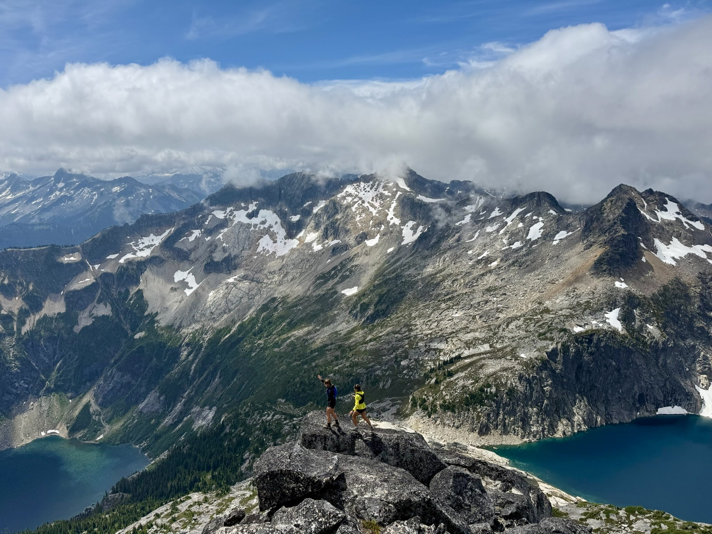
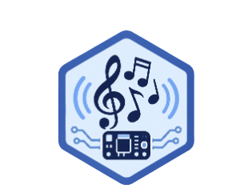
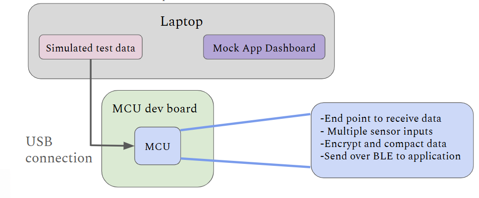

May – Aug 2026
TELUS
Software · Vancouver
A Python and FastAPI app that automates firmware deployments and device-status campaigns over TR-069/USP, plus a CI-to-Jira test pipeline that saves about 7 hours a week.

STAYING CURIOUS
I’m a fifth-year Computer Engineering student at UBC, focused on embedded systems and hardware. Outside the lab, I run with UBC's varsity XC/track teams and explore the mountains.
Follow the project trailThe person behind the projects
I'm a Computer Engineering student at UBC, a varsity cross-country runner, and someone who's always liked figuring out how things work. What started with Lego builds and Minecraft creations eventually turned into robots, circuit boards, firmware, and real-time systems. When I'm not building something, you'll probably find me running, exploring the mountains, or planning my next adventure.
The jobs
May – Aug 2026
Software · Vancouver
A Python and FastAPI app that automates firmware deployments and device-status campaigns over TR-069/USP, plus a CI-to-Jira test pipeline that saves about 7 hours a week.
May – Aug 2025
Embedded systems · Vancouver
Multi-threaded audio in C++ on FreeRTOS, held under 10 ms across three ESP32s, and a diagnostic setup that cut debugging cycles by about 75%.
May – Dec 2024
Electrical · North Vancouver
Ultrasound firmware in C++ and Python, an Altium noise-reduction board that raised signal strength about 3×, and SPI into downhole hardware.
May – Aug 2023
Image processing · Ottawa
Semiconductor images at 4 nm, including the Apple A16, and machine learning that shortened the correction and transistor-extraction pass.
Outside the lab
I'm just as happy working on a new project as I am spending a weekend in the mountains. Running, hiking, skiing, and exploring new places are a big part of my life outside engineering.
On the desk C / C++ · Python · FastAPI · FreeRTOS · ROS 2 · Altium · SPI · SystemVerilog · FPGA · ARM · Git
PROJECT TRAIL
Each marker leads to a different kind of terrain. Choose a destination to explore the project.
UBC ELECTRICAL & COMPUTER ENGINEERING CAPSTONE · 2026–27


An assistive technology project exploring how physiological signals can become music.
Biomusic aims to help caregivers and clinicians better understand the internal states of people who may not communicate verbally. Our capstone team is adapting a thin, skin-conformal epidermal patch as a comfortable, low-power sensing front end that streams physiological data to a mobile app in real time.
My contribution · Hardware & Firmware
I’m developing embedded firmware for the Nordic nRF5340, a dual-core Arm Cortex-M4 SoC. On its application core, FreeRTOS organizes sensor acquisition, data packaging, and Bluetooth Low Energy communication as concurrent real-time tasks. Our current milestone is a proof-of-concept BLE connection between the MCU and a mock mobile app.
FreeRTOS · Nordic nRF5340 · Arm Cortex-M4 · Bluetooth Low Energy · C · Embedded firmware · Multicore SoC · Biosignal acquisition
AUTONOMOUS ROBOTICS · TEAM A2
A small scale autonomous car that can navigate, react to obstacles, read parking signs, and park.
The ROS 2 system combines track-following planners with a safety layer that can reduce speed, plus a state machine coordinating parking-spot search, sign checks, parking, and exit maneuvers. The perception stack uses camera and depth data, LiDAR, and parking-sign recognition.
Competition result
Against 15 groups, our car was the fastest on both the obstacle course and the straight course, and achieved the most functional parking performance.
ROS 2 · Python · OpenCV · YOLOv8 · TensorRT · LiDAR · Depth camera · Ackermann steering
OPERATING SYSTEMS
Core kernel subsystems for a multi-process educational operating system.
Developed the foundations that move OS161 from a limited single-tasking kernel toward a robust system with process abstractions and virtual memory.
fork() and execv() process supportKernel C · Concurrency · GDB · Memory management · System calls
DIGITAL DESIGN · SYSTEMVERILOG
A complete ARC4 stream cipher system designed in SystemVerilog and implemented on FPGA.
The design handles state initialization, key scheduling, decryption, and brute-force key cracking. I split the search across decryption cores for near-2× speedup, then validated the system with RTL testbenches and on hardware.
SystemVerilog · FPGA · SRAM · RTL testbenches · Python
ROBOTICS · EMBEDDED
A robot that can navigate a maze, find an open flame, and put it out.
Combined sensor-based navigation, real-time decisions, and environmental feedback. The robot was the only one to successfully complete both challenge mazes.
Embedded robotics · Ultrasonic sensors · Infrared flame sensor · LCD
ROBOTICS · CONTROL
A fully autonomous robot built to find an opponent and push it out of the ring.
Infrared sensing locates competitors while phototransistors detect the ring edge, giving the robot an aggressive but controlled strategy.
BASIC · Infrared sensors · Phototransistors · DC motors · Custom circuits
C · UNIX SYSTEMS
A UNIX-like shell in C with process control and signal-safe job management.
The shell follows UNIX semantics for process groups and job lifecycles, with support for foreground and background execution.
jobs, fg, and bgfork and execvpSIGCHLD, SIGINT, and SIGTSTPC · GCC · UNIX system calls · POSIX signals · Process groups
Contact
I’m open to new opportunities and collaborations.